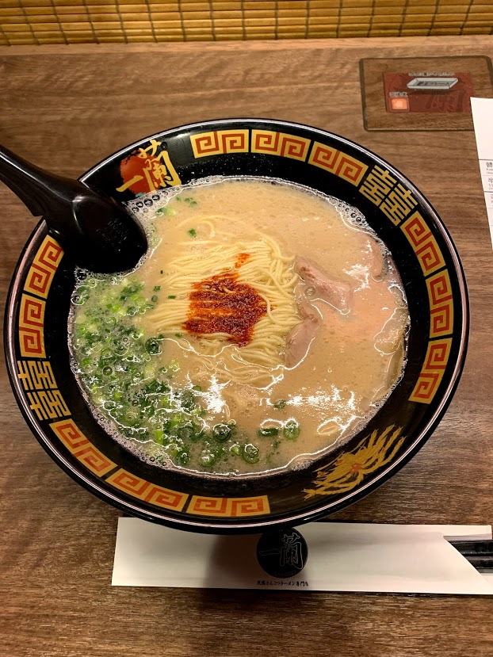

Food items are normally served Tapas style, with many small dishes for the table to share. Common dishes include edamame, yakitori, kara-age and rice.
Izakayas often have all you can drink (nomi-hodai) and all you can eat (tabe-hodai) options, making for a budget friendly meal!
Ramen
 Ramen can be seen as a type of comfort food in Japan.
Ramen is made of wheat noodles, normally served in meat broth and flavoured with soy sauce or miso. The noodle toppings can be pork (Chashu), dried seaweed, or boiled eggs. These ingredients can vary based on the region of Japan - for example pork broth is from Kyushu, and miso ramen is from Hokkaido. In Tokyo it is possible to find all types of ramen.
Tokyo-style ramen is normally thin, curly noodles ith soy-chicken broth. Ramen places are often open 24 hours, and its common to see businessmen or young people there in the early hours, The popularity of ramen establishments is understandable, because of how flavourful and filling a bowl of ramen can be, whislt still being around only 10USD.
Eating at one of the individual booths in a ramen shop is a great way to see Tokyo culture first hand!
What Japanese food do you want to learn more about?